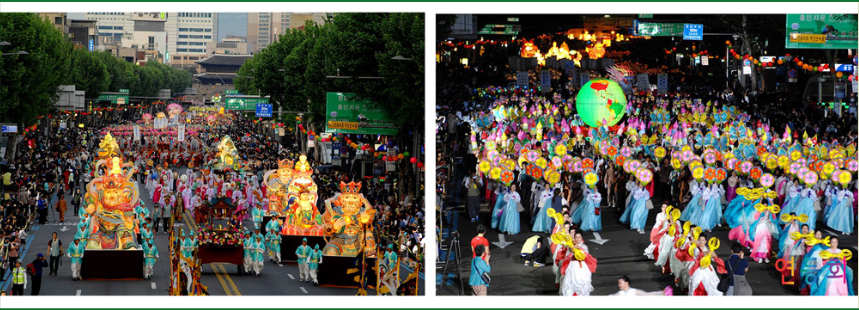
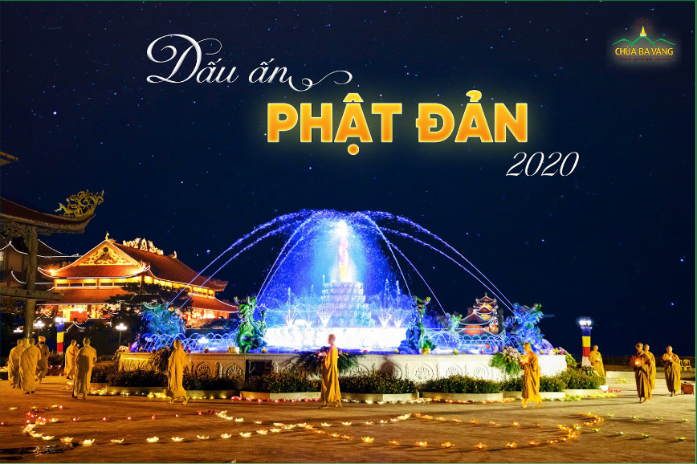
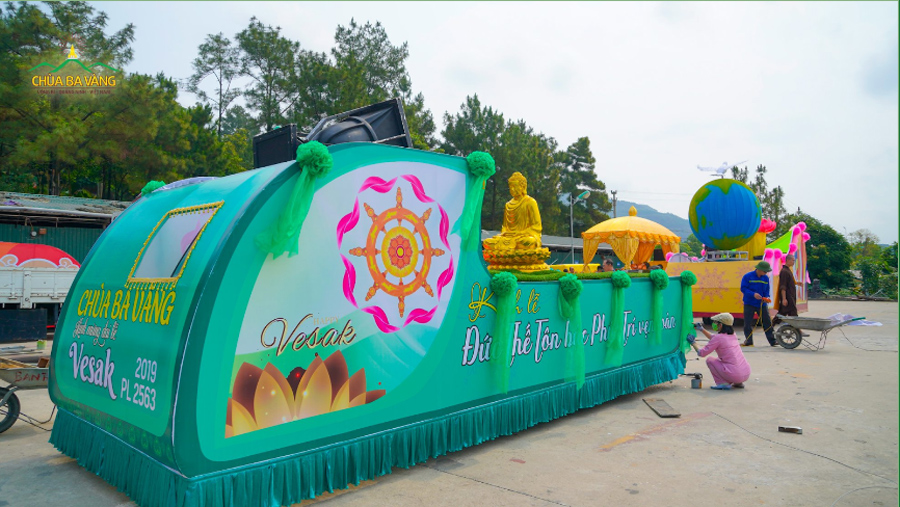
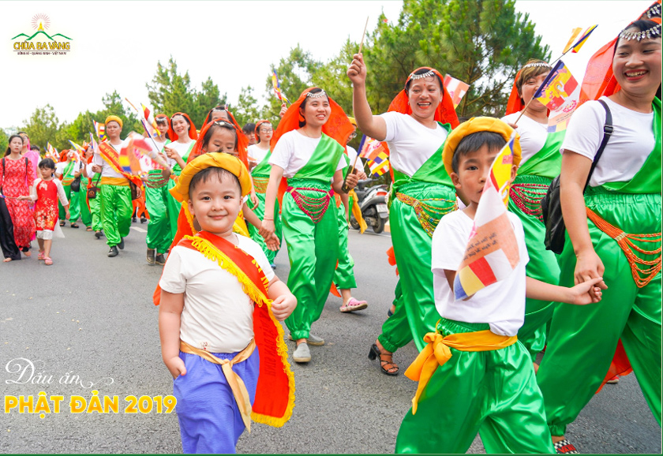
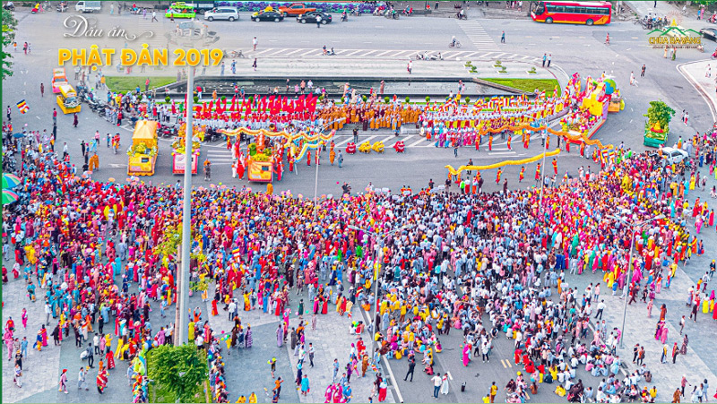
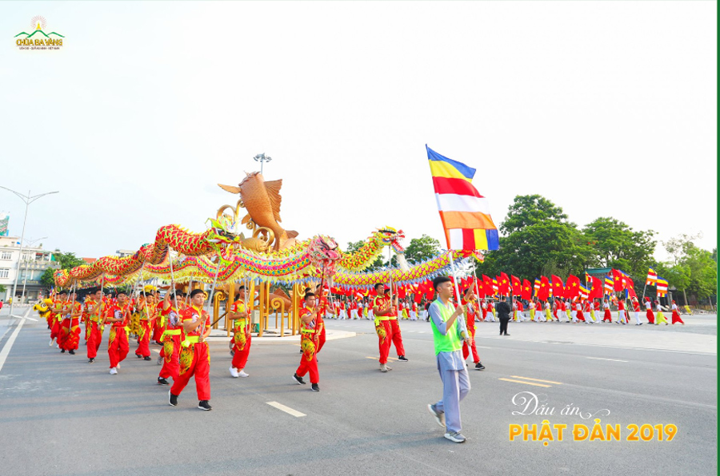
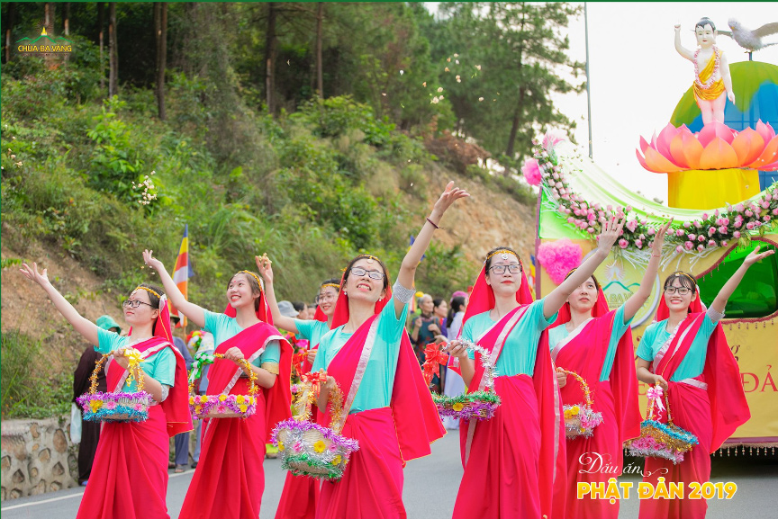
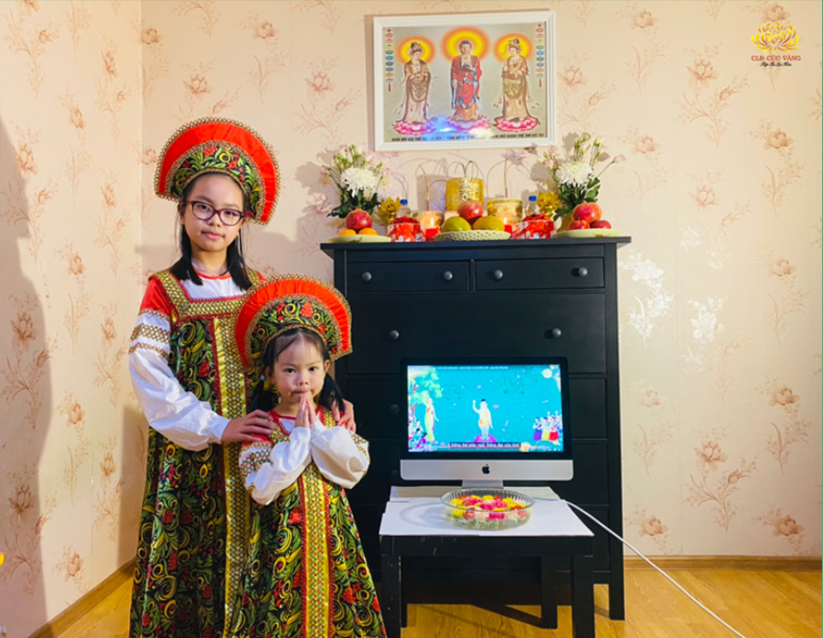

Lễ Phật đản là một sự kiện đặc biệt quan trọng và thiêng liêng đối với hàng trăm triệu Tăng Ni và các tín đồ Phật giáo trên toàn thế giới. Nếu không có sự đản sinh của Đức Phật hơn 2600 năm trước tại Ấn Độ thì không thể có đạo Phật và cũng không thể có con đường giải thoát cho chúng sinh ngày nay.
Đặc biệt, tại các quốc gia như Ấn Độ, Hàn Quốc, Nhật Bản, Thái Lan, Việt Nam,… lễ Phật đản được tổ chức rất lớn với sự tham gia của hàng vạn tín đồ Phật giáo. Vậy tại sao phải tổ chức Đại lễ Phật đản? Lễ này mang lại lợi ích gì cho những người tổ chức, tham gia và cho xã hội? Kính mời quý Phật tử cùng tìm hiểu qua chia sẻ của Cô Phạm Thị Yến (Pháp danh Tâm Chiếu Hoàn Quán) – Chủ nhiệm CLB Cúc Vàng – Tập Tu Lục Hòa trong bài viết dưới đây.

Mục lục [Hiển thị]
- Lễ Phật đản vào ngày nào?
- Lợi ích của việc tổ chức lễ Phật đản lớn
- 1. Tán thán sự đản sinh của Đức Phật: Phước báu cho những người tổ chức
- 2. Tổ chức lễ Phật đản giúp chúng sinh kết duyên với Phật Pháp
- 3. Mang lại hạnh phúc cho nhân dân, đất nước
- Tổ chức lễ Phật đản lớn là do nhân – duyên – quả
- Phật tử chùa Ba Vàng và hình ảnh đẹp lễ Phật đản các năm
Lễ Phật đản vào ngày nào?
Theo lịch sử Phật giáo, Đức Phật Thích Ca xuất thân là Thái tử Tất Đạt Đa, thuộc dòng họ Thích Ca. Ngài sinh vào năm 624 trước Tây lịch tại đất nước Ca Tỳ La Vệ thuộc xứ Ấn Độ xưa. Theo Phật giáo Bắc tông, Thái tử Tất Đạt Đa sinh ngày 8 tháng 4; còn theo Phật giáo Nam tông thì Rằm tháng 4 mới là ngày sinh của Ngài.
Hướng về ngày Đức Phật đản sinh, Đại hội Phật giáo quốc tế năm 1950 lấy ngày Rằm tháng tư âm lịch làm ngày kỉ niệm Phật đản. Tuy nhiên, nhiều nơi tổ chức lễ hội Phật đản đến hết tháng 4 âm lịch để thể hiện lòng thành kính, tri ân đấng Cha lành vĩ đại của muôn loài chúng sinh. Vậy nên, tháng 4 âm lịch được coi là tháng Phật đản, Tết của người con Phật.
Lợi ích của việc tổ chức lễ Phật đản lớn
1. Tán thán sự đản sinh của Đức Phật: Phước báu cho những người tổ chức
Sự đản sinh của Đức Phật xuống cõi Ta Bà là một hy hữu duyên mang đến hạnh phúc cho nhân thiên và muôn loài. Sự đản sinh này vô cùng quý báu mà chúng ta nên tán thán và ghi nhớ, bởi sự đản sinh của Ngài là duy nhất vào thời kỳ kiếp sống của chúng sinh. Trong một thời kỳ kiếp sống của chúng sinh, chỉ có một vị Chính Đẳng Chính Giác ra đời, tuyên bố Pháp cứu khổ cho tất cả chúng sinh, sau đó rất lâu xa mới có một vị nữa ra đời. Cho nên, sự đản sinh của Đức Phật là vô cùng hy hữu, quý báu và mang lại lợi ích to lớn.
Tổ chức lễ hội Phật đản cũng là việc làm tán thán sự đản sinh cao quý của Ngài. Những người tổ chức sẽ nhận được phước báu từ sự tán thán đó: Quá khứ những người này đã có nhân duyên với Phật Pháp nên đến nay họ tán thán, tán dương và biết ơn Đức Phật qua việc tổ chức lễ Phật đản. Điều đó sẽ mang lại phước báu cho họ ở kiếp hiện tại và những kiếp sau, là nguồn tâm dẫn dắt họ được đi trên con đường đến với chính Pháp.

Như Đức Phật dạy trong phần Tán thán, phẩm Không có rung động, chương 4, Tăng Chi Bộ I, ĐTKVN: “Có suy tư, có thẩm sát, không tán thán người không xứng đáng được tán thán. Có suy tư, có thẩm sát, tán thán người xứng đáng được tán thán. Có suy tư, có thẩm sát, tự cảm thấy không tin tưởng đối với những chỗ không xứng đáng được tin tưởng. Có suy tư, có thẩm sát, tự cảm thấy tin tưởng đối với những chỗ đáng tin tưởng. Thành tựu 4 pháp này, này các Tỷ kheo, như vậy tương xứng được sanh lên cõi Trời”.
Cho nên chúng ta cảm niệm, tán thán ân đức của Đức Phật, chư Tăng trong ngày Phật đản, chúng ta sẽ nhận được nhiều phước báu – là phước báu tương ứng cảnh giới cõi Trời. Bởi sự đản sinh của Đức Phật mang lại lợi ích tối thượng cho nhân thiên; đây là sự tán thán đúng đắn.

2. Tổ chức lễ Phật đản giúp chúng sinh kết duyên với Phật Pháp
Lễ Phật đản là nhân duyên để độ sinh, giúp chúng sinh được kết duyên với Phật Pháp. Nếu những ai đi qua lễ hội Phật đản chỉ cần khởi tâm tán thán, họ sẽ có duyên lành vào trong Phật Pháp. Đặc biệt, nếu khởi tâm tán thán sự đản sinh của Đức Phật thì hiện đời này họ được phước báu, nhiều đời nhiều kiếp sau cũng được phước báu và có nhân duyên được tu tập trong Phật Pháp, hạnh phúc, an vui, sẽ đi đến giải thoát, thành tựu Vô thượng Bồ đề và đạt được Niết bàn an lạc.
Thậm chí, người chê bai cũng sẽ có nhân duyên với Phật Pháp. Bởi chê bai tức là đã động tâm tới ngày sinh của Đức Phật và đối với giáo lý của đạo Phật. Bất cứ ai động tâm tới tất cả các nhân duyên trong nhà Phật thì họ đều sẽ có nhân duyên với Phật Pháp trong lâu dài.
Một năm cũng chỉ có một lần kỷ niệm ngày Phật đản, nhưng trong ngày đó có rất nhiều chúng sinh được kết duyên với Phật Pháp. Cho nên, việc tổ chức lễ Phật đản lớn là một việc bố thí cứu khổ, một Pháp duyên khiến cho chúng sinh bước những bước chân đầu tiên trên con đường thoát khổ mà Đức Phật đã chỉ ra.
Nếu chúng ta giúp đỡ người khác đồ ăn, thức uống, tiền bạc thì mặc dù họ được bớt khổ trong hiện tại nhưng vẫn đau khổ trầm luân trong luân hồi sinh tử. Nhưng nếu giúp chúng sinh kết duyên với Phật Pháp để họ có nhân duyên giác ngộ giải thoát thì đó là sự bố thí, từ thiện cao quý. Đó là lý do chúng ta tổ chức Đại lễ Phật đản vì đại lễ càng tổ chức lớn bao nhiêu, chúng sinh càng được kết duyên rộng bấy nhiêu – đây là lợi ích rộng khắp và thù thắng.

3. Mang lại hạnh phúc cho nhân dân, đất nước
Tổ chức lễ Phật đản mang lại hạnh phúc lớn cho nhân dân, đất nước. Trong kinh Đức Phật dạy: Nếu ở nơi đâu có lễ hội lớn, mà đó là những lễ hội cao quý thì chư Thiên sẽ ủng hộ. Cho nên, về mặt tâm linh, nếu đất nước Việt Nam nhiều nơi tổ chức lễ Phật Đản lớn thì chúng ta sẽ có nhân duyên được nhiều chư Thiên ủng hộ và họ sẽ lại lai đáo về đất nước chúng ta nhiều hơn. Từ đó đất nước chúng ta sẽ có nhân duyên thời tiết được tốt hơn, dịch bệnh sớm được hóa giải và kinh tế được phát triển.
Tổ chức lễ Phật đản lớn là do nhân – duyên – quả
Hàng năm, cứ đến ngày Phật đản, hàng triệu tín đồ Phật giáo khắp nơi trên thế giới đều tổ chức lễ Phật đản lớn với nhiều hình thức khác nhau. Việc tổ chức lễ Phật đản lớn không nằm ngoài lý nhân – duyên – quả của đạo Phật.
Nếu nhân loại càng nhiều người giác ngộ thì việc tổ chức Phật đản sẽ ngày càng lớn, bởi đó là Nhân – Duyên – Quả. Nhân là sự ra đời của Đức Phật mang lại lợi ích và hạnh phúc cho chúng sinh, duyên là nhiều người giác ngộ, quả là nhiều người hoan hỷ và biết ơn sự ra đời của Đức Phật. Cho nên, từ những điều đó sẽ có thành quả là lễ kỷ niệm Đức Phật đản sinh lớn và long trọng.
Việc tổ chức lễ Phật đản lớn là đầy đủ Nhân – Duyên – Quả, chứ không do một cá nhân nào và không ai có thể cản hay phá được. Không chỉ riêng chùa Ba Vàng tổ chức lớn, mà ở nơi nào có càng nhiều người giác ngộ và tập trung của nhiều nguồn tâm biết ơn, thì ở đó lễ Phật Đản sẽ được mọi người thấy tổ chức lớn.

Như vậy chúng ta hiểu rằng nơi nào hội đủ nguồn tâm hoan hỷ với sự đản sinh của Ngài, cung kính, biết ơn và có nhiều sự giác ngộ Phật Pháp; ở nơi đó lễ Phật đản sẽ được tổ chức lớn. Thông qua việc tổ chức Đại lễ Phật đản, chúng ta mong muốn có thêm nhiều người sẽ được giác ngộ, thiện Pháp tăng trưởng, tinh tấn thực hành giáo Pháp Phật để Đại lễ Phật đản được tổ chức lớn hơn nữa, đem lại lợi ích thù thắng cho chúng sinh.
Hơn nữa, sự kiện Đức Phật đản sinh mang lại niềm vui rất lớn cho chúng sinh, khiến vô số chúng sinh được thâm nhập giáo lý của Ngài mà giác ngộ, biết bỏ ác làm lành, khiến thế giới này tươi đẹp. Vì lẽ đó mà sự đản sinh của Đức Phật là cao quý tối thượng. Cho nên, việc tổ chức Phật đản có lớn bao nhiêu đi nữa cũng chưa tương xứng với lợi ích mà do sự ra đời của Ngài đem lại cho chúng sinh.

Phật tử chùa Ba Vàng và hình ảnh đẹp lễ Phật đản các năm
Vào ngày Phật đản các năm, dù được về chùa hay tổ chức Phật đản tại nhà, Phật tử chùa Ba Vàng cũng hân hoan đón mừng ngày này đúng tinh thần của những người con Phật.
 
Tổ chức Đại lễ Phật đản không chỉ tán thán sự đản sinh hy hữu, vi diệu của đấng Thế Tôn mà còn là dịp để chúng ta hoằng dương Phật Pháp, giúp nhiều người được kết duyên với chính Pháp. Đây cũng nằm trong tâm nguyện Bồ đề của hàng Phật tử chúng ta: “Chuyển tải Phật Pháp, rộng khắp thế gian”. Chúc quý đạo hữu nhận được nhiều phước báu trong ngày lễ Phật đản cũng như góp sức mình để nhiều người kết duyên với Tam Bảo vào ngày này.
Các bài nên xem:
Bình luận


Quản trị trang
- Chủ quyền của đất nước;
- Các vấn đề về chính trị;
- Các phát ngôn cho mục đích hoặc có dấu hiệu chống lại Đảng, Nhà nước, chia rẽ và gây mất đoàn kết dân tộc, đoàn kết tôn giáo;
- Vi phạm hoặc có dấu hiệu vi phạm chính sách, pháp luật của Nhà nước và thuần phong, mỹ tục của dân tộc.
Cho mục đích trên, chúng tôi tuyên bố có quyền xóa, gỡ bỏ hoặc thực hiện bất kỳ biện pháp nào thuộc quyền của Quản trị trang và Chủ sở hữu; và tố cáo với cơ quan chức năng hoặc thực hiện các biện pháp pháp lý cần thiết để ngăn chặn, xử lý các hành vi vi phạm hoặc hành vi có dấu hiệu vi phạm nêu trên.